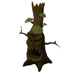

")
Böser Baum
Nur RuneScape-Mitglieder können den bösen Baum bekämpfen. Bitte werdet Mitglied, damit ihr auf dieses Feature zugreifen könnt.
Eine der Belohnungen (der unsichtbare Holzfällerei-Bonus) hält nur eine gewisse Zeit vor. Dabei zählt die Zeit, die ihr im Spiel verbringt. Wenn ihr euch ausloggt, hält der Timer an und startet beim nächsten Einloggen wieder.
Einführung

Manchmal nimmt die Natur jedoch nicht ihren gewohnten Lauf. Das mag daran liegen, dass tief im Untergrund ein uraltes Übel lauert oder ein wilder Gott oder Dämon seine Finger im Spiel hat. Vielleicht hat die Natur manchmal auch einfach eine ihrer Launen. Jedenfalls lässt sie ab und zu böse Bäume aus dem Boden sprießen. Die Wichtel merken meist erst, dass ein Baum böse ist, wenn es schon zu spät ist. Sie könnten aber sowieso nicht viel dagegen ausrichten, da ihre Hände zu klein sind, um eine Axt zu halten, und sie die Technik der Zunderbüchsen nicht kapieren.
Aber dafür gibt es ja herumziehende Abenteurer...
Voraussetzungen
 Böse Bäume kommen in verschiedenen Ausprägungen, von denen manche sehr schwer zu besiegen sind. Gute Kenntnisse in Holzfällerei und Funkenschlagen sind auf jeden Fall von Vorteil. Ihr müsst nichts mitbringen, da der Wichtel euch eine Axt und eine Zunderbüchse geben kann, wenn ein Baum sich als böse entpuppt. Ihr könnt aber auch eure eigene Axt benutzen, um aus dem Baum und seinen Wurzeln Kleinholz zu machen.
Böse Bäume kommen in verschiedenen Ausprägungen, von denen manche sehr schwer zu besiegen sind. Gute Kenntnisse in Holzfällerei und Funkenschlagen sind auf jeden Fall von Vorteil. Ihr müsst nichts mitbringen, da der Wichtel euch eine Axt und eine Zunderbüchse geben kann, wenn ein Baum sich als böse entpuppt. Ihr könnt aber auch eure eigene Axt benutzen, um aus dem Baum und seinen Wurzeln Kleinholz zu machen. Ihr könnt pro Tag nur zwei böse Bäume großziehen oder angreifen.
Erste Schritte

Ihr könnt auch mit den Bäumen des Seins sprechen, wenn ihr wissen wollt, wo die bösen Bäume wachsen. Sobald ein böser Baum seine volle Größe erreicht hat, werden die Bäume des Seins sogar anbieten, euch direkt zu ihm zu teleportieren. Wenn die Saat des Bösen RuneScape gerade nicht terrorisiert, haben sie zu dem Thema allerdings nicht viel zu sagen.
Böse Bäume sind zwar gemein und hinterhältig, aber auch sie fangen mal klein an - nämlich als Bäumchen. In diesem Entwicklungsstadium wandert ein Wichtel fröhlich um sie herum und fragt die Abenteurer, die seinen Weg kreuzen, ob sie ihm beim Großziehen helfen möchten. Wer über die benötigte Stufe in Landwirtschaft verfügt, kann das Bäumchen ganz einfach und ohne Hilfsmittel hegen und pflegen, indem er darauf klickt.
Nach fünf Wachstumsstadien zeigt das Bäumchen sein wahres Gesicht, und ihr werdet bemerken, dass seine peitschenden Wurzeln euch daran hindern, ihn anzugreifen. Um an den Baum selbst heranzukommen, müsst ihr mit einer Axt zuerst die Wurzeln abhacken.
 Die Wurzeln werden im wahrsten Sinne des Wortes zu Kleinholz verarbeitet, mit dem ihr dann am Fuß des Baums ein Feuer entfachen könnt. Die Wurzeln wachsen nach einiger Zeit wieder nach und schlagen dabei alle Angreifer zurück, die in der Nähe des Baums stehen.
Die Wurzeln werden im wahrsten Sinne des Wortes zu Kleinholz verarbeitet, mit dem ihr dann am Fuß des Baums ein Feuer entfachen könnt. Die Wurzeln wachsen nach einiger Zeit wieder nach und schlagen dabei alle Angreifer zurück, die in der Nähe des Baums stehen. Wenn ihr den Baum von seinen Wurzeln befreit habt, könnt ihr ihm - wie oben beschrieben - mit eurer Axt eins auf die Borke geben. Um dem Baum Schaden zuzufügen, müsst ihr die folgenden Voraussetzungen mitbringen:
| Art | Landwirtschaft (zum Hegen & Pflegen) | Funkenschlagen (zum Anzünden) | Holzfällerei (zum Hacken) | ||
 Normale Bäume |
1 | 1 | 1 | ||
 Eichenbäume |
7 | 15 | 15 | ||
 Weidenbäume |
15 | 30 | 30 | ||
 Ahornbäume |
22 | 45 | 45 | ||
|
 Eibenbäume |
30 | 60 | 60 | ||
 Magiebäume |
37 | 75 | 75 | ||
 Böser Baum des Unseins |
42 | 85 | 85 |
Wenn ihr mit vereinter Kraft die gefährlichen Wurzeln und fuchtelnden Zweige zurückgeschlagen habt, wird der Baum sterben, und alle Abenteurer, die für seinen Tod mitverantwortlich waren, können sich aus seinen Überresten ihre Belohnung abholen.
Belohnungen
Zusätzlich zu der Erfahrung, die ihr beim Kampf mit dem bösen Baum sammelt, erhaltet ihr manchmal auch Dinge, die der Baum mithilfe seines massiven Wurzelwerks aus dem Erdreich geholt hat. Dazu gehören unter anderem Zertifikate von Scheiten der entsprechenden Baumart (bei bösen Bäumen des Unseins bekommt man Eiben-, Magie-, Teak- oder Mahagoni-Scheite), Samen, Vogelnester, Gegenstände wie Schlüsselhälften und Hinweis-Schriftrollen oder Gold.
Des Weiteren habt ihr beim Holzfällen für eine gewisse Zeit (zwischen 5 und 30 Minuten lang) die Möglichkeit, eure Scheite automatisch zur Bank zu schicken, wenn euer Inventar voll ist. Das gilt für normale, Eichen-, Weiden-, Ahorn-, Eiben- und Magie-Scheite.
Außerdem ist die Chance geringer, dass der Baum, aus dem ihr Scheite schlagt, umfällt - wodurch euer Training effizienter wird! Dieser Effekt tritt nur bei wildwachsenden Bäumen auf, nicht bei Bäumen, die ihr auf Parzellen anbaut.
Entwicklung
Entwickler: Patrick N
Grafik: Wayne M, Chris W, Mark B, James W, Daniel J, Wing F C
Qualitätssicherung James H, Dan O'R, Dan G
Audio: Chris J

Weitere Artikel in Spaß für zwischendurch
|
|
|
Weiterführende Informationen Wenn euch dieser Artikel nicht weitergeholfen hat, könnt ihr in den folgenden Kapiteln der RuneScape-Webseite mehr Informationen finden:
|
|